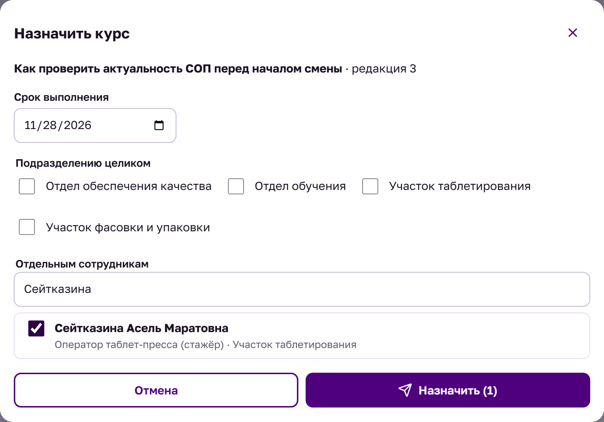
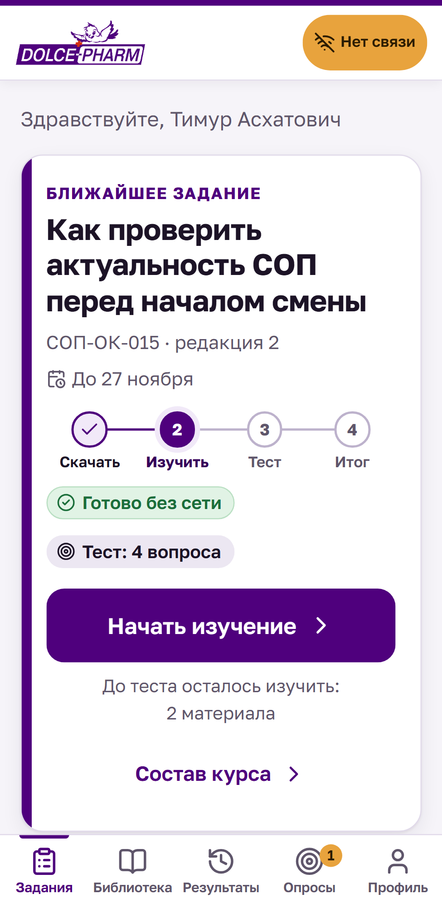
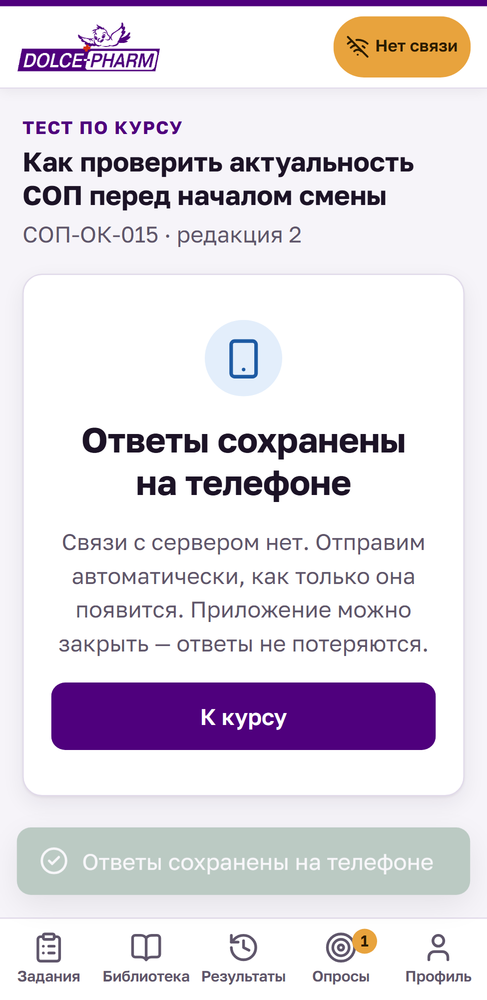
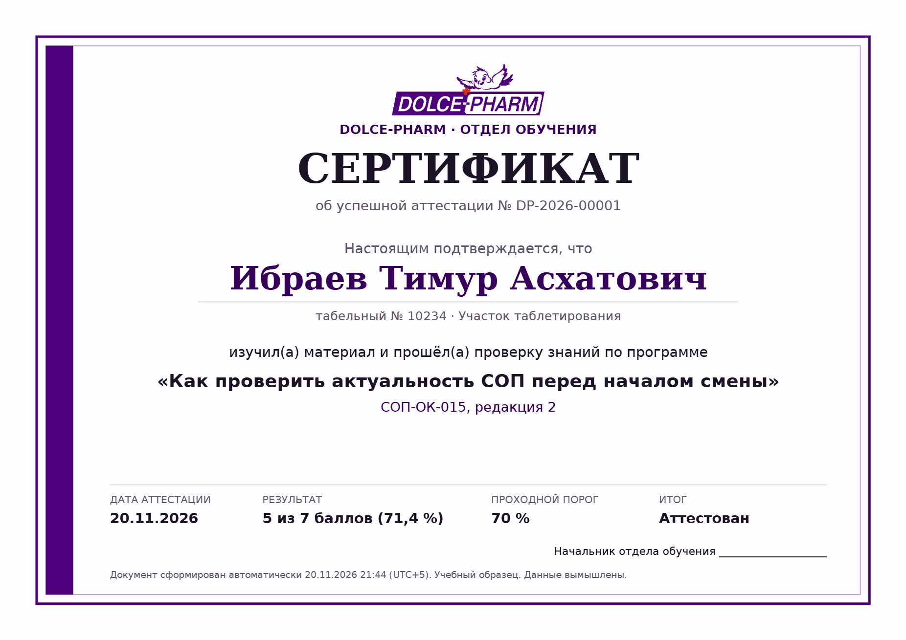

Как это работает
1Назначить курс

С ноутбука — сотруднику или всему участку. Курс собирается из обычных файлов.
2Сдать без сети


Курс скачан заранее. В цеху связь не нужна — ответы хранятся на телефоне.
3Получить протокол

Результат приходит сам. Сертификат и протокол — PDF для печати.
Измерено на настоящем телефоне
1,6 сот возврата сети до приёма результатаприложение было закрыто
0дублей и потерьдве сдачи — две строки в отчёте
2,6 МБвесь курс на телефонеPDF, Word, Excel, PowerPoint, видео, тест
0 ₸лицензий и облаковсервер и данные — у вас
POCO X7 Pro, Android 15, Chrome · 20.11.2026 · один телефон, замеры после 2–10 минут без сети.
Что уже работает
- Курсы из ваших файловPDF, Word, Excel, видео
- Тестычетыре типа вопросов
- Библиотекапоиск работает и без сети
- Время и отчётывыгрузка в Excel
- Сертификат и протоколPDF для печати
- Оценка 180/360сам, руководитель, коллеги
- Диалоговый тренажёрнештатные ситуации
- Три ролиу каждой — свой доступ
Для предприятия

Данные остаются у васСервер в вашей сети, без зарубежных облаков
1С и Битрикс24Готовый REST API — основа для интеграции

Личные телефоныСтавится из браузера, без магазина приложений